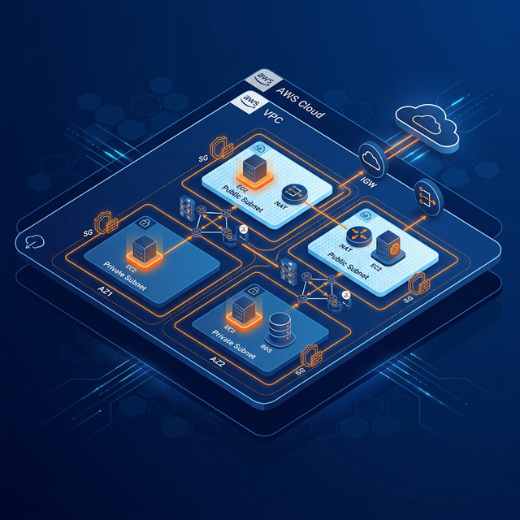
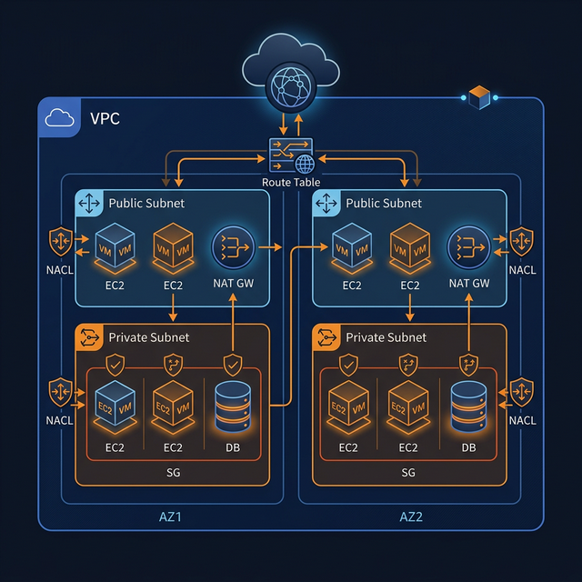

A complete guide to creating, configuring, and managing your own isolated network in the AWS Cloud

Your own logically isolated section of the AWS Cloud
Amazon VPC lets you provision a logically isolated section of the AWS Cloud where you can launch AWS resources in a virtual network that you define. You have complete control over your virtual networking environment.
VPC provides network-level isolation. Resources inside a VPC are not accessible from outside unless explicitly allowed. It's like having your own private data center in the cloud.
You select your own IP address range (CIDR block), create subnets, configure route tables, and set up network gateways — full control over your network topology.
Host web applications, run databases, create hybrid cloud architectures, deploy microservices, and much more — all within a secure, customizable network.
Building blocks of your AWS virtual network
Divide your VPC into smaller IP ranges. Public subnets have internet access; private subnets are isolated.
Enables communication between your VPC and the internet. Attach to VPC for public subnet internet access.
Allows private subnet instances to access internet for updates without exposing them to inbound traffic.
Rules that determine where network traffic is directed. Each subnet must be associated with a route table.
Virtual firewalls for EC2 instances. Control inbound and outbound traffic at the instance level. Stateful.
Additional layer of security at the subnet level. Stateless — must define both inbound and outbound rules.
Typical production VPC layout with public and private subnets

Choose the right IP address ranges for your VPC and subnets
| CIDR Block | IP Range | Total IPs | Usable IPs | Best For |
|---|---|---|---|---|
| 10.0.0.0/16 | 10.0.0.0 – 10.0.255.255 | 65,536 | 65,531 | Large production VPCs |
| 10.0.0.0/20 | 10.0.0.0 – 10.0.15.255 | 4,096 | 4,091 | Medium workloads |
| 10.0.0.0/24 | 10.0.0.0 – 10.0.0.255 | 256 | 251 | Small subnets / dev |
| 172.16.0.0/16 | 172.16.0.0 – 172.16.255.255 | 65,536 | 65,531 | Secondary VPC range |
⚠️ AWS reserves 5 IPs per subnet: network, VPC router, DNS, future use, and broadcast addresses.
Using the AWS Management Console
Go to AWS Console → Services → VPC → Click "Create VPC"
Choose "VPC and more" for guided setup. Set Name tag, IPv4 CIDR (e.g., 10.0.0.0/16), and optionally enable IPv6.
Create at least 2 subnets across 2 AZs — one public (10.0.1.0/24) and one private (10.0.2.0/24) per AZ.
Create an IGW and attach it to the VPC. This enables public subnet internet access.
Create a public route table (0.0.0.0/0 → IGW). Associate public subnets. Private subnets use the main route table.
Create a NAT Gateway in the public subnet with an Elastic IP. Update private route table: 0.0.0.0/0 → NAT GW.
Create SGs for each tier — Web (port 80/443), App (port 8080), DB (port 3306/5432). Allow only necessary traffic.
Configure NACLs as a second defense layer. Allow required ports, deny everything else. Remember: NACLs are stateless.
Enable Flow Logs for monitoring. Send to CloudWatch Logs or S3 for analysis and troubleshooting.
Deploy EC2 instances, RDS databases, Lambda functions, etc., selecting the appropriate subnet for each resource.
Automate VPC creation using command line
Two layers of network security in AWS VPC
| Feature | Security Groups | Network ACLs |
|---|---|---|
| Level | Instance level | Subnet level |
| State | Stateful (return traffic auto-allowed) | Stateless (must allow return traffic) |
| Rules | Allow rules only | Allow and Deny rules |
| Evaluation | All rules evaluated together | Rules evaluated in order by number |
| Applies To | Only if associated with instance | All instances in the subnet |
| Default | Denies all inbound, allows all outbound | Allows all inbound and outbound |
Connect your VPC to other networks
Connect two VPCs privately using AWS backbone. No single point of failure. Non-transitive — each pair needs its own peering connection. Works across accounts and regions.
Hub-and-spoke model for connecting multiple VPCs, on-premises networks, and VPN connections through a single gateway. Simplifies complex architectures.
Site-to-Site VPN creates encrypted IPsec tunnels between your on-premises network and VPC over the public internet. Quick to set up, suitable for moderate bandwidth.
Dedicated private network connection from on-premises to AWS. 1 Gbps or 10 Gbps links. Lower latency, higher bandwidth, more consistent network performance.
Production-ready recommendations
What's free and what costs money
• VPC itself — no charge
• Subnets — no charge
• Route Tables — no charge
• Security Groups — no charge
• Network ACLs — no charge
• Internet Gateway — no charge
• VPC Peering — no data transfer charge (same AZ)
• NAT Gateway — ~$0.045/hr + data processing
• VPN Connection — ~$0.05/hr
• Direct Connect — port-hour fees
• Elastic IP (unused) — ~$0.005/hr
• VPC Endpoints (Interface) — ~$0.01/hr
• Transit Gateway — ~$0.05/hr per attachment
• Data transfer between AZs — ~$0.01/GB
You now have a comprehensive understanding of AWS VPC — from creation to production best practices
docs.aws.amazon.com/vpc
Practice with AWS Free Tier
AWS Solutions Architect